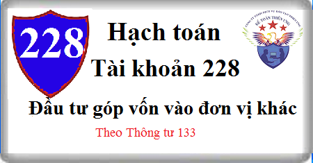

Hướng dẫn Cách hạch toán Tài khoản 228 theo Thông tư 133, Cách hạch toán Đầu tư góp vốn vào đơn vị khác, hạch toán góp vốn vào công ty liên doanh, liên kết, khi nhận được lợi nhuận, cổ tức.
1. Nguyên tắc kế toán Tài khoản 228 - Đầu tư góp vốn vào đơn vị khác
1.1. Tài khoản này dùng để phản ánh các khoản đầu tư góp vốn vào đơn vị khác và tình hình thu hồi các khoản đầu tư góp vốn vào đơn vị khác của doanh nghiệp.
Các khoản đầu tư góp vốn vào đơn vị khác của doanh nghiệp gồm:
a) Các khoản vốn góp liên doanh, liên kết:
- Tài khoản này dùng để phản ánh toàn bộ vốn góp vào công ty liên doanh và công ty liên kết; tình hình thu hồi vốn đầu tư liên doanh, liên kết. Tài khoản này không phản ánh các giao dịch dưới hình thức hợp đồng hợp tác kinh doanh không thành lập pháp nhân.
- Công ty liên doanh được thành lập bởi các bên góp vốn liên doanh có quyền đồng kiểm soát các chính sách tài chính và hoạt động, là đơn vị có tư cách pháp nhân hạch toán độc lập. Công ty liên doanh phải tổ chức thực hiện công tác kế toán riêng theo quy định của pháp luật hiện hành về kế toán, chịu trách nhiệm kiểm soát tài sản, các khoản nợ phải trả, doanh thu, thu nhập khác và chi phí phát sinh tại đơn vị mình. Mỗi bên góp vốn liên doanh được hưởng một phần kết quả hoạt động của công ty liên doanh theo thỏa thuận của hợp đồng liên doanh.
- Khoản đầu tư được phân loại là đầu tư vào công ty liên kết khi nhà đầu tư nắm giữ trực tiếp hoặc gián tiếp từ 20% đến dưới 50% quyền biểu quyết của bên nhận đầu tư mà không có thỏa thuận khác hoặc nhà đầu tư có ảnh hưởng đáng kể với bên được đầu tư.
- Khi nhà đầu tư không còn quyền đồng kiểm soát thì phải ghi giảm khoản đầu tư vào công ty liên doanh; Khi không còn ảnh hưởng đáng kể hoặc tỷ lệ nắm giữ quyền biểu quyết đối với bên nhận đầu tư không đảm bảo theo tỷ lệ quy định nêu trên thì phải ghi giảm khoản đầu tư vào công ty liên kết.
- Các khoản chi phí liên quan trực tiếp tới hoạt động bán hoặc thanh lý khoản đầu tư vào công ty liên doanh, liên kết được ghi nhận là chi phí tài chính trong kỳ phát sinh.
- Khi thanh lý, nhượng bán, thu hồi vốn góp liên doanh, liên kết, căn cứ vào giá trị tài sản thu hồi được kế toán ghi giảm số vốn đã góp. Phần chênh lệch giữa giá trị hợp lý của khoản thu hồi được so với giá trị ghi sổ của khoản đầu tư được ghi nhận là doanh thu hoạt động tài chính (nếu lãi) hoặc chi phí tài chính (nếu lỗ).
b) Đầu tư khác: Bao gồm các khoản đầu tư vào công cụ vốn của đơn vị khác nhưng không có quyền đồng kiểm soát, không có ảnh hưởng đáng kể đối với bên được đầu tư và các khoản đầu tư khác như vàng, bạc, kim khí quý, đá quý không được phân loại là hàng tồn kho.
1.2. Giá phí các khoản đầu tư được phản ánh theo giá gốc, bao gồm giá mua cộng (+) các chi phí liên quan trực tiếp đến việc đầu tư (nếu có), như: Chi phí giao dịch, môi giới, tư vấn, kiểm toán, lệ phí, thuế và phí ngân hàng... Trường hợp đầu tư bằng tài sản phi tiền tệ, giá phí khoản đầu tư được ghi nhận theo giá trị hợp lý của tài sản phi tiền tệ tại thời điểm phát sinh.
1.3. Trường hợp nhà đầu tư mua lại phần vốn góp tại công ty liên doanh, liên kết: Tại ngày mua, nhà đầu tư xác định và phản ánh giá phí khoản đầu tư vào công ty liên doanh, liên kết bao gồm: Giá trị hợp lý tại ngày diễn ra trao đổi của các tài sản đem trao đổi, các khoản nợ phải trả đã phát sinh hoặc đã thừa nhận và các công cụ vốn do bên mua phát hành để đổi lấy quyền đồng kiểm soát tại công ty liên doanh và ảnh hưởng đáng kể tại công ty liên kết cộng (+) các chi phí liên quan trực tiếp đến việc mua lại phần vốn góp tại công ty liên doanh, liên kết.
1.4. Việc đầu tư có thể thực hiện dưới các hình thức:
a) Đầu tư dưới hình thức góp vốn vào đơn vị khác (do bên được đầu tư huy động vốn): Theo hình thức này, tài sản của bên góp vốn được ghi nhận vào Báo cáo tình hình tài chính của bên nhận vốn góp.
b) Đầu tư dưới hình thức mua lại phần vốn góp tại đơn vị khác (mua lại phần vốn của chủ sở hữu): Theo hình thức này, tài sản của bên mua (bên đầu tư, nhận chuyển nhượng vốn góp) được chuyển cho bên bán (bên chuyển nhượng vốn góp) mà không được ghi nhận vào Báo cáo tình hình tài chính của đơn vị phát hành công cụ vốn (bên được đầu tư).
1.5. Khi thực hiện đầu tư bằng tài sản phi tiền tệ, nhà đầu tư phải căn cứ vào hình thức đầu tư để áp dụng phương pháp kế toán một cách phù hợp, cụ thể:
a) Nếu đầu tư dưới hình thức góp vốn bằng tài sản phi tiền tệ, nhà đầu tư phải đánh giá lại tài sản mang đi góp vốn trên cơ sở thỏa thuận. Phần chênh lệch giữa giá trị ghi sổ hoặc giá trị còn lại và giá trị đánh giá lại của tài sản mang đi góp vốn được kế toán là thu nhập khác hoặc chi phí khác.
b) Nếu đầu tư dưới hình thức mua lại phần vốn góp của đơn vị khác và thanh toán cho bên chuyển nhượng vốn bằng tài sản phi tiền tệ:
- Nếu tài sản phi tiền tệ dùng để thanh toán là hàng tồn kho, nhà đầu tư phải kế toán như giao dịch bán hàng tồn kho dưới hình thức hàng đổi hàng (ghi nhận doanh thu, giá vốn của hàng tồn kho mang đi trao đổi lấy phần vốn được mua);
- Nếu tài sản phi tiền tệ dùng để thanh toán là TSCĐ, BĐSĐT, nhà đầu tư phải kế toán như giao dịch nhượng bán TSCĐ, BĐSĐT (ghi nhận doanh thu, thu nhập khác, giá vốn, chi phí khác....);
- Nếu tài sản phi tiền tệ dùng để thanh toán là các khoản đầu tư vào công cụ vốn (cổ phiếu) hoặc công cụ nợ (trái phiếu, các khoản phải thu...) của đơn vị khác, nhà đầu tư phải kế toán như giao dịch thanh lý, nhượng bán các khoản đầu tư (ghi nhận lãi, lỗ vào doanh thu hoạt động tài chính hoặc chi phí tài chính).
1.6. Kế toán phải mở sổ chi tiết theo dõi từng khoản đầu tư vào đơn vị khác theo từng đối tượng. Thời điểm ghi nhận các khoản đầu tư góp vốn vào đơn vị khác là thời điểm nhà đầu tư chính thức có quyền sở hữu, cụ thể như sau:
- Chứng khoán niêm yết được ghi nhận tại thời điểm khớp lệnh (T+0);
- Chứng khoán chưa niêm yết, các khoản đầu tư dưới hình thức khác được ghi nhận tại thời điểm chính thức có quyền sở hữu theo quy định của pháp luật.
1.7. Nhà đầu tư phải hạch toán đầy đủ, kịp thời các khoản cổ tức, lợi nhuận được chia vào Báo cáo tài chính riêng tại thời điểm được quyền nhận. Cổ tức, lợi nhuận được chia trong một số trường hợp được hạch toán như sau:
a) Cổ tức, lợi nhuận được chia bằng tiền hoặc tài sản phi tiền tệ cho giai đoạn sau ngày đầu tư được hạch toán vào doanh thu hoạt động tài chính theo giá trị hợp lý tại ngày được quyền nhận;
b) Cổ tức, lợi nhuận được chia bằng tiền hoặc tài sản phi tiền tệ cho giai đoạn trước ngày đầu tư không hạch toán vào doanh thu hoạt động tài chính mà hạch toán giảm giá trị khoản đầu tư.
c) Trường hợp nhận cổ tức bằng cổ phiếu thì thực hiện theo nguyên tắc: chỉ theo dõi số lượng cổ phiếu được nhận trên thuyết minh Báo cáo tài chính, không ghi nhận tăng giá trị khoản đầu tư và doanh thu hoạt động tài chính.
1.8. Giá vốn các khoản đầu tư tài chính khi thanh lý, nhượng bán được xác định theo phương pháp bình quân gia quyền tính cho các khoản đầu tư tại từng đối tượng.
1.9. Khi lập Báo cáo tài chính, doanh nghiệp phải xác định giá trị khoản đầu tư bị tổn thất để trích lập dự phòng tổn thất đầu tư vào đơn vị khác.
2. Kết cấu và nội dung Tài khoản 228 - Đầu tư góp vốn vào đơn vị khác:
Bên Nợ:
- Số vốn góp liên doanh đã góp vào cơ sở kinh doanh đồng kiểm soát tăng;
- Giá gốc khoản đầu tư vào công ty liên kết tăng;
- Giá trị các khoản đầu tư khác tăng.
Bên Có:
- Số vốn góp liên doanh vào cơ sở kinh doanh đồng kiểm soát giảm do đã thu hồi, chuyển nhượng dẫn đến không còn quyền đồng kiểm soát đối với bên được đầu tư;
- Giá gốc khoản đầu tư vào công ty liên kết giảm do nhận lại vốn đầu tư hoặc thu được các khoản lợi ích ngoài lợi nhuận được chia;
- Giá gốc khoản đầu tư vào công ty liên kết giảm do bán, thanh lý toàn bộ hoặc một phần khoản đầu tư và không còn ảnh hưởng đáng kể đối với bên được đầu tư;
- Giá trị các khoản đầu tư khác giảm.
Số dư bên Nợ:
- Số vốn góp liên doanh vào cơ sở kinh doanh đồng kiểm soát hiện còn cuối kỳ;
- Giá gốc khoản đầu tư vào công ty liên kết hiện đang nắm giữ cuối kỳ;
- Giá trị khoản đầu tư khác hiện có cuối kỳ.
Tài khoản 228 - Đầu tư góp vốn vào đơn vị khác, có 2 tài khoản cấp 2:
- Tài khoản 2281 - Đầu tư vào công ty liên doanh, liên kết: Phản ánh toàn bộ vốn góp vào công ty liên doanh, liên kết; tình hình thu hồi vốn đầu tư vào công ty liên doanh, liên kết.
- Tài khoản 2288 - Đầu tư khác: Phản ánh giá trị hiện có và tình hình biến động tăng, giảm các loại đầu tư vào công cụ vốn của đơn vị khác nhưng không có quyền kiểm soát hoặc đồng kiểm soát, không có ảnh hưởng đáng kể đối với bên được đầu tư và các khoản đầu tư khác như vàng, bạc, kim khí quý… không được phân loại là hàng tồn kho.
3. Cách hạch toán Đầu tư góp vốn liên doanh, đầu tư khác Tài khoản 228
3.1. Kế toán các khoản vốn góp liên doanh, liên kết:
a. Khi góp vốn liên doanh bằng tiền vào công ty liên doanh, liên kết, ghi:
Nợ TK 228 - Đầu tư góp vốn vào đơn vị khác (2281)
Có các Tài khoản 111, 112.
b. Các chi phí liên quan trực tiếp tới việc đầu tư vào công ty liên doanh, liên kết (chi phí thông tin, môi giới, giao dịch trong quá trình thực hiện đầu tư), ghi:
Nợ TK 228 - Đầu tư góp vốn vào đơn vị khác (2281)
Có các TK 111, 112.
c. Trường hợp góp vốn vào công ty liên doanh, liên kết bằng tài sản phi tiền tệ:
- Trường hợp giá trị ghi sổ hoặc giá trị còn lại của tài sản đem đi góp vốn nhỏ hơn giá trị do các bên đánh giá lại, kế toán phản ánh phần chênh lệch đánh giá tăng tài sản vào thu nhập khác, ghi:
Nợ TK 228 - Đầu tư góp vốn vào đơn vị khác
Nợ Tài khoản 214 Hao mòn TSCĐ
Có các TK 211, 217 (góp vốn bằng TSCĐ hoặc BĐS đầu tư)
Có các Tài khoản 152, 153, 155, 156 (nếu góp vốn bằng hàng tồn kho)
Có TK 711 - Thu nhập khác (phần chênh lệch đánh giá tăng).
- Trường hợp giá trị ghi sổ hoặc giá trị còn lại của tài sản đem đi góp vốn lớn hơn giá trị do các bên đánh giá lại, kế toán phản ánh phần chênh lệch đánh giá giảm tài sản vào chi phí khác, ghi:
Nợ TK 228 - Đầu tư góp vốn vào đơn vị khác
Nợ TK 214 - Hao mòn TSCĐ
Nợ TK 811 - Chi phí khác (phần chênh lệch đánh giá giảm)
Có các Tài khoản 211, 217 (góp vốn bằng TSCĐ hoặc BĐS đầu tư)
Có các TK 152, 153, 155, 156 (nếu góp vốn bằng hàng tồn kho).
d. Trường hợp nhà đầu tư mua lại phần vốn góp tại công ty liên doanh, liên kết:
- Nếu việc đầu tư vào công ty liên doanh, liên kết được thanh toán bằng tiền, hoặc các khoản tương đương tiền, ghi:
Nợ TK 228 - Đầu tư góp vốn vào đơn vị khác (2281)
Có các TK 111, 112, 121,...
- Nếu việc đầu tư vào công ty liên doanh, liên kết được thực hiện bằng cách phát hành cổ phiếu:
+ Nếu giá phát hành (theo giá trị hợp lý) của cổ phiếu tại ngày diễn ra trao đổi lớn hơn mệnh giá cổ phiếu, ghi:
Nợ TK 228 - Đầu tư góp vốn vào đơn vị khác (theo giá trị hợp lý)
Có TK 411 Vốn đầu tư của chủ sở hữu (4111 - Vốn góp của chủ sở hữu) (theo mệnh giá)
Có TK 4112 - Thặng dư vốn cổ phần (số chênh lệch giữa giá trị hợp lý lớn hơn mệnh giá cổ phiếu).
+ Nếu giá phát hành (theo giá trị hợp lý) của cổ phiếu tại ngày diễn ra trao đổi nhỏ hơn mệnh giá cổ phiếu, ghi:
Nợ TK 228 - Đầu tư góp vốn vào đơn vị khác (theo giá trị hợp lý)
Nợ TK 4112 - Thặng dư vốn cổ phần (số chênh lệch giữa giá trị hợp lý nhỏ hơn mệnh giá cổ phiếu)
Có TK 4111 - Vốn góp của chủ sở hữu (theo mệnh giá).
+ Chi phí phát hành cổ phiếu thực tế phát sinh, ghi:
Nợ TK 4112 - Thặng dư vốn cổ phần
Có các TK 111, 112,...
- Nếu việc đầu tư vào công ty liên doanh, liên kết được thanh toán bằng tài sản phi tiền tệ:
+ Trường hợp trao đổi bằng TSCĐ, khi đưa TSCĐ đem trao đổi, kế toán ghi giảm TSCĐ:
Nợ TK 811 - Chi phí khác (giá trị còn lại của TSCĐ đưa đi trao đổi)
Nợ TK 214 - Hao mòn TSCĐ (giá trị hao mòn)
Có TK 211 - TSCĐ (nguyên giá).
Đồng thời ghi tăng thu nhập khác và tăng khoản đầu tư vào công ty liên doanh do trao đổi TSCĐ:
Nợ TK 228 - Đầu tư góp vốn vào đơn vị khác (tổng giá thanh toán)
Có TK 711 - Thu nhập khác (giá trị hợp lý của TSCĐ đưa đi trao đổi)
Có TK 3331 Thuế GTGT phải nộp (TK 33311) (nếu có).
+ Trường hợp trao đổi bằng sản phẩm, hàng hoá, khi xuất kho sản phẩm, hàng hoá đưa đi trao đổi, ghi:
Nợ TK 632 - Giá vốn hàng bán
Có các Tài khoản 155, 156,...
Đồng thời phản ánh doanh thu bán hàng và ghi tăng khoản đầu tư vào công ty liên doanh, liên kết:
Nợ TK 228 - Đầu tư góp vốn vào đơn vị khác
Có TK 511 - Doanh thu bán hàng và cung cấp dịch vụ
Có TK 333 - Thuế và các khoản phải nộp Nhà nước (33311).
đ. Các khoản chi phí liên quan đến hoạt động góp vốn liên doanh, liên kết phát sinh trong kỳ như lãi tiền vay để góp vốn, các chi phí khác, ghi:
Nợ TK 635 - Chi phí tài chính
Nợ TK 133 - Thuế GTGT được khấu trừ (nếu có)
Có các TK 111, 112, 152,…
e. Kế toán cổ tức, lợi nhuận được chia:
- Khi nhận được thông báo về cổ tức, lợi nhuận được chia bằng tiền từ công ty liên doanh, liên kết cho giai đoạn sau ngày đầu tư, ghi:
Nợ Tài khoản 138 Phải thu khác (1388)
Có TK 515 - Doanh thu hoạt động tài chính.
- Khi nhận được cổ tức, lợi nhuận của giai đoạn trước khi đầu tư, ghi:
Nợ các Tài khoản 112, 138
Có TK 228 - Đầu tư góp vốn vào đơn vị khác
g. Kế toán thanh lý, nhượng bán khoản đầu tư vào công ty liên doanh, liên kết:
Nợ các TK 111, 112, 131, 152, 153, 156, 211,
Nợ TK 635 - Chi phí tài chính (nếu lỗ)
Có TK 228 - Đầu tư góp vốn vào đơn vị khác
Có TK 515 - Doanh thu hoạt động tài chính (nếu lãi).
h. Chi phí thanh lý, nhượng bán khoản đầu tư vào công ty liên doanh, liên kết, ghi:
Nợ TK 635 - Chi phí tài chính
Nợ TK 133 - Thuế GTGT được khấu trừ
Có các TK 111, 112, 331...
3.2 Kế toán các khoản đầu tư khác:
a. Khi doanh nghiệp đầu tư mua cổ phiếu hoặc góp vốn dài hạn nhưng không có quyền kiểm soát, đồng kiểm soát hoặc ảnh hưởng đáng kể đối với bên được đầu tư:
- Trường hợp đầu tư bằng tiền, căn cứ vào giá gốc khoản đầu tư, ghi:
Nợ TK 228 - Đầu tư góp vốn vào đơn vị khác (2288)
Có các TK 111, 112.
- Trường hợp đầu tư bằng tài sản phi tiền tệ:
+ Trường hợp góp vốn bằng tài sản phi tiền tệ, căn cứ vào giá đánh giá lại vật tư, hàng hoá, TSCĐ, ghi:
Nợ TK 228 - Đầu tư góp vốn vào đơn vị khác (2288)
Nợ TK 214 - Hao mòn TSCĐ (giá trị hao mòn lũy kế)
Nợ TK 811 - Chi phí khác (số chênh lệch giữa giá đánh giá lại nhỏ hơn giá trị ghi sổ của vật tư, hàng hoá, giá trị còn lại của TSCĐ)
Có các TK 152, 153, 156, 211, 213,...
Có TK 711 - Thu nhập khác (số chênh lệch giữa giá đánh giá lại lớn hơn giá trị ghi sổ của vật tư, hàng hoá, giá trị còn lại của TSCĐ).
- Trường hợp mua lại phần vốn góp bằng tài sản phi tiền tệ:
(+) Trường hợp trao đổi bằng TSCĐ:
Nợ TK 811 - Chi phí khác (giá trị còn lại của TSCĐ đưa đi trao đổi)
Nợ TK 214 - Hao mòn TSCĐ (giá trị hao mòn)
Có các TK 211 (nguyên giá).
Đồng thời ghi nhận thu nhập khác và tăng khoản đầu tư dài hạn khác do trao đổi TSCĐ:
Nợ TK 228 - Đầu tư góp vốn vào đơn vị khác (2288) (tổng giá thanh toán)
Có TK 711 - Thu nhập khác (giá trị hợp lý khoản đầu tư nhận được)
Có TK 3331 - Thuế GTGT phải nộp (TK 33311) (nếu có).
(+) Trường hợp trao đổi bằng sản phẩm, hàng hoá, khi xuất kho sản phẩm, hàng hoá đưa đi trao đổi, ghi:
Nợ TK 632 - Giá vốn hàng bán
Có các TK 155, 156,...
Đồng thời phản ánh doanh thu bán hàng và ghi tăng khoản đầu tư khác:
Nợ TK 228 - Đầu tư góp vốn vào đơn vị khác (2288) (tổng giá thanh toán)
Có TK 511 - Doanh thu bán hàng và cung cấp dịch vụ (giá trị hợp lý của khoản đầu tư nhận được)
Có TK 333 - Thuế và các khoản phải nộp Nhà nước (33311).
b. Kế toán cổ tức, lợi nhuận được chia bằng tiền hoặc tài sản phi tiền tệ (ngoại trừ trường hợp nhận cổ tức bằng cổ phiếu):
- Khi nhận được thông báo về cổ tức, lợi nhuận được chia, ghi:
Nợ TK 138 - Phải thu khác (1388)
Có TK 515 - Doanh thu hoạt động tài chính (cổ tức, lợi nhuận được chia của giai đoạn sau ngày đầu tư)
Có TK 228 - Đầu tư góp vốn vào đơn vị khác (cổ tức, lợi nhuận được chia của giai đoạn trước ngày đầu tư)
c. Thanh lý, nhượng bán các khoản đầu tư khác:
- Trường hợp bán, thanh lý có lãi, ghi:
Nợ các TK 111, 112,131...
Có TK 228 - Đầu tư góp vốn vào đơn vị khác (2288) (giá trị ghi sổ)
Có TK 515 - Doanh thu hoạt động tài chính (giá bán lớn hơn GTGS).
- Trường hợp bán, thanh lý bị lỗ, ghi:
Nợ các TK 111, 112,131...
Nợ TK 635 - Chi phí tài chính (giá bán nhỏ hơn giá trị ghi sổ)
Có TK 228 - Đầu tư góp vốn vào đơn vị khác (2288) (giá trị ghi sổ).
